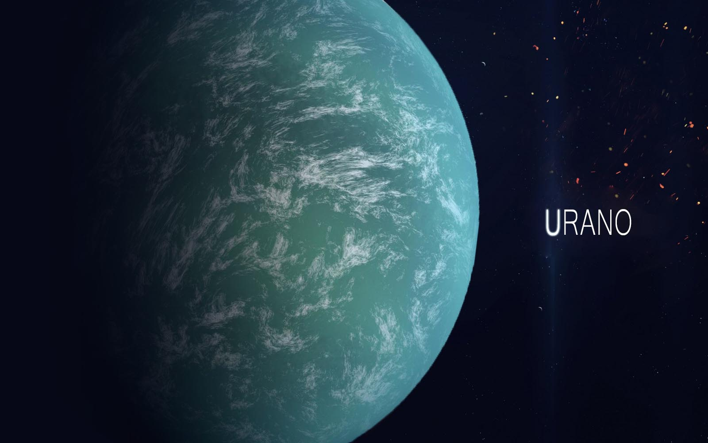

Urano
Urano é o sétimo planeta a partir do Sol, o terceiro maior e o quarto mais massivo dos oito planetas do Sistema Solar. Foi nomeado em homenagem ao deus grego do céu, Urano, o pai de Cronos (Saturno) e o avô de Zeus (Júpiter). Embora seja visível a olho nu em boas condições de visualização, não foi reconhecido pelos astrônomos antigos como um planeta devido a seu pequeno brilho e lenta órbita. William Herschel anunciou sua descoberta em 13 de março de 1781, expandindo as fronteiras do Sistema Solar pela primeira vez na história moderna. Urano foi também o primeiro planeta a ser descoberto por meio de um telescópio. Urano tem uma composição similar à de Netuno, e ambos possuem uma composição química diferente da dos maiores gigantes gasosos, Júpiter e Saturno. Como tal, os astrônomos algumas vezes os colocam em uma categoria separada, os "gigantes gelados". A atmosfera de Urano, embora similar às de Júpiter e Saturno em sua composição primária de hidrogênio e hélio, contém mais "gelos" tais como água, amônia e metano, assim como traços de hidrocarbonetos. É a mais fria atmosfera planetária no Sistema Solar, com uma temperatura mínima de 49 K (–224 °C). Tem uma complexa estrutura de nuvens em camadas, e acredita-se que a água forma as nuvens mais baixas, e o metano as mais exteriores. Em contraste, seu interior é formado principalmente por gelo e rochas.
| Diâmetro equatorial | 51 118 ± 8[4] km |
| Área da superfície | 8,115 6×109 km² |
| Volume | 6,833×1013 km³ |
| Massa | (8,6810 ± 0,0013)×1025 kg |
| Densidade média | 1,27 g/cm³ |
| Gravidade superficial | 0,886 g |
| Período de rotação | 17 h 14 min 24 s |
| Temperatura |
média: -220 ºC mínima: -224 ºC máxima: -216 ºC |
Como os outros planetas gigantes, Urano tem um sistema de anéis, uma magnetosfera e vários satélites naturais. O sistema uraniano tem uma configuração única entre os planetas porque seu eixo de rotação é inclinado para o lado, quase no plano de translação do planeta. Portanto, seus polos norte e sul estão quase situados onde seria o equador nos outros planetas. Em 1986, imagens da sonda Voyager 2 mostraram Urano como um planeta virtualmente sem características na luz visível, ao contrário dos outros planetas gigantes que contêm faixas de nuvens e grandes tempestades. Entretanto, observações terrestres têm mostrado sinais de mudanças sazonais e aumento da atividade meteorológica nos últimos anos à medida que Urano se aproximou do equinócio. A velocidade de vento no planeta pode alcançar 250 metros por segundo (900 km/h).